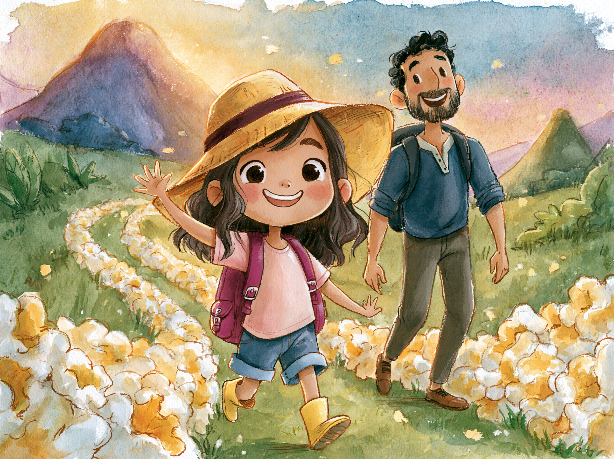
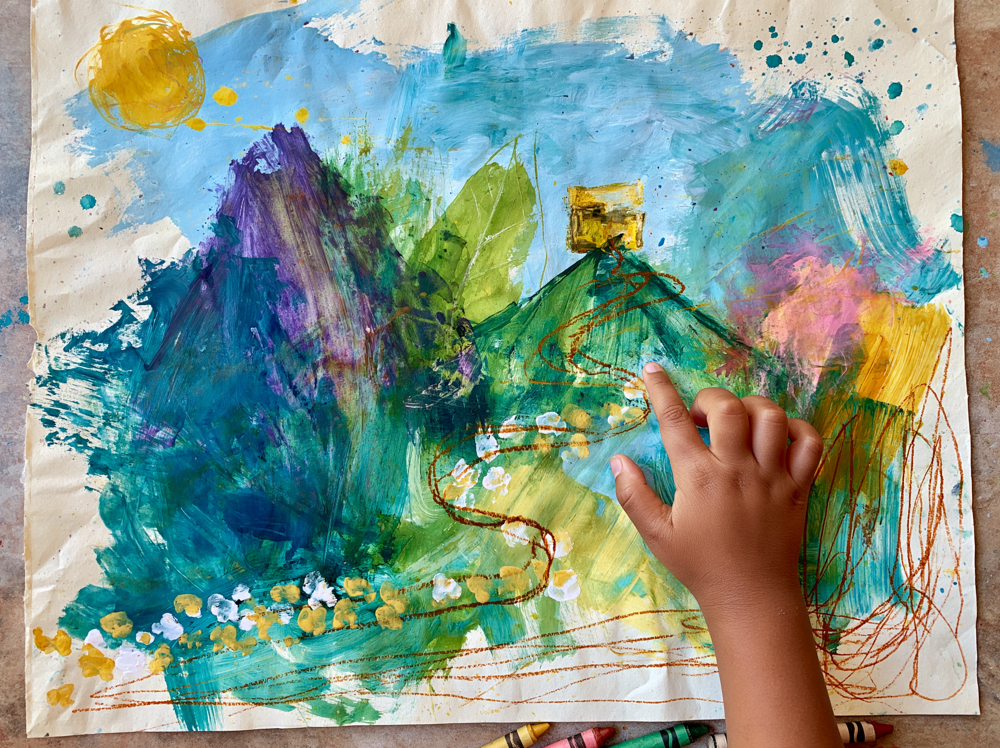
STARTTREASURESSSSএক বৃষ্টির বিকেলে রুশদা বাবার সাথে ছবি আঁকছিল।
“বাবা! আমার একটা গোপন কথা আছে!” সে ফিসফিস করে বলল।
“কী গোপন কথা?” বাবা জিজ্ঞেস করলেন।
“বলা যাবে না। তাহলে তো সবাই জেনে যাবে!” রুশদা খিলখিল করে হাসল। “তবে আমি দেখাতে পারি।”
সে তার ছবিটা উল্টো করে ঘুরিয়ে ধরল।
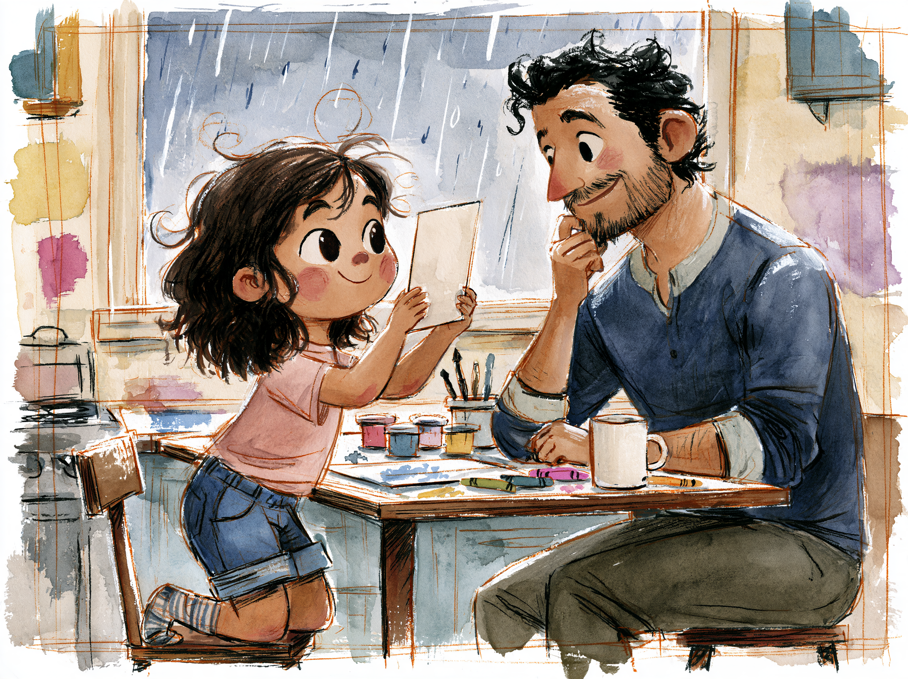
সেখানে ছিল একটা বড় পাহাড়। একটা ছোট্ট পাহাড়। আর একটা সোনালি গুপ্তধনের সিন্দুক।
আর দুটোর মাঝখানে পপকর্ন দিয়ে বানানো লম্বা, আঁকাবাঁকা একটা পথ।
“এটা গুপ্তধনের মানচিত্র!” রুশদা বলল।
“আমরা ওখানে যাব কীভাবে?” বাবা জিজ্ঞেস করলেন।
রুশদা কাগজের ওপর আঙুল বুলিয়ে দেখাল। “প্রথমে বাঁয়ে। তারপর ডানে। তারপর S, S, S, S!”
ফট!
একটা পপকর্নের দানা লাফিয়ে ছবি থেকে বেরিয়ে এল।
ফট! ফট! আরও দুটো মেঝের ওপর দিয়ে লাফাতে লাফাতে চলে গেল।
“বাবা,” রুশদা ফিসফিস করে বলল, “আমাদের মানচিত্রটা নড়ছে!”
ঘরটা ঝিকমিক করতে লাগল। মেঝেটা দুলতে লাগল।
তারপর সাঁই! রুশদা আর বাবা গড়িয়ে একেবারে ছবির ভেতরে ঢুকে পড়ল।
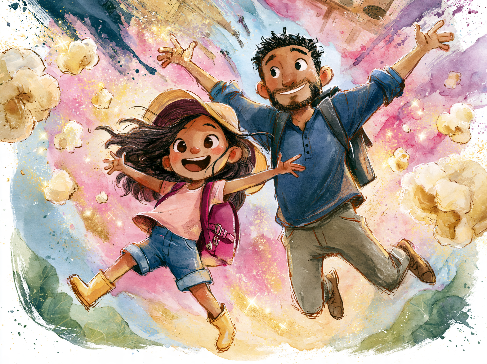
তারা এসে নামল সোনালি পপকর্নে ভরা এক উপত্যকায়।
রুশদা তার পানির শক্তি দিয়ে একটুখানি ছলাৎ করতে চাইল। এক ফোঁটাও না!
বাবা হাত নেড়ে তাঁর বাতাসের শক্তি দিয়ে একটু হাওয়া বানাতে চাইলেন। একটুও হাওয়া না!
“আমাদের শক্তি হারিয়ে গেছে!” বাবা চেঁচিয়ে উঠলেন।
রুশদা দূরের ছোট্ট পাহাড়টার দিকে আঙুল তুলল। “শক্তি ফিরে পেতে হলে আমাদের গুপ্তধনের কাছে পৌঁছাতে হবে।”
তারপর সে হাসল। “চ্যালেঞ্জ নিলাম!”
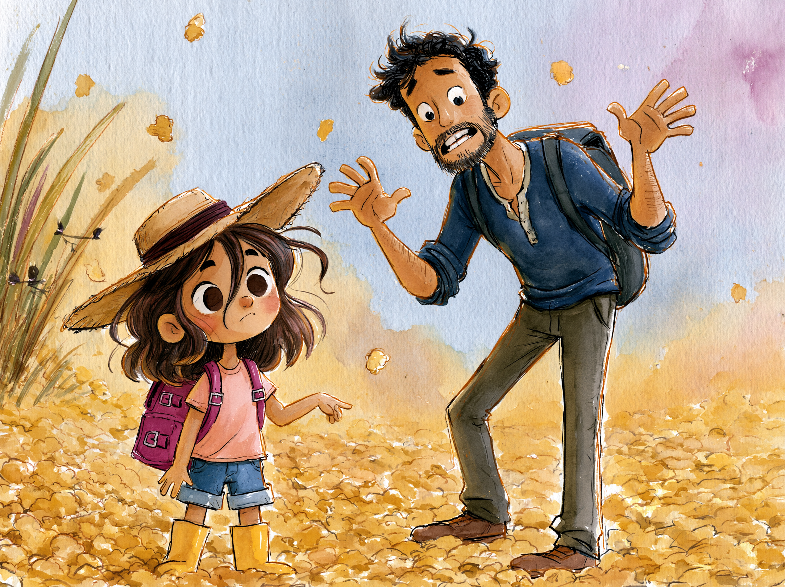
বাবা আঁকাবাঁকা পথটার দিকে তাকালেন।
“যদি গুপ্তধন পেয়ে যাই, কিন্তু বাড়ির পথ খুঁজে না পাই?”
রুশদা থামল। মন দিয়ে মানচিত্রটা দেখল।
“বুঝেছি! আমরা পেছনে পেছনে পপকর্নের ছোট্ট ছোট্ট তীরচিহ্ন রেখে যাব। তাহলে সেগুলো ধরে ফিরে আসতে পারব!”
সে মাটিতে তিনটা দানা সাজিয়ে একটা ছোট্ট তীরচিহ্ন বানাল।
“দারুণ বুদ্ধি!” বাবা বললেন। রুশদা মুচকি হাসল। “মানচিত্র ধরে চলো, বাবা!”
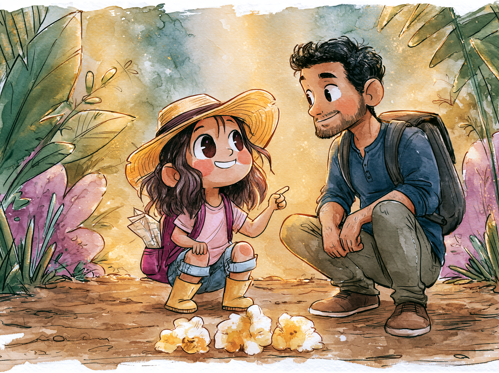
হালুউউম!
একটা পাথরের পেছন থেকে বিশাল এক সবুজ ডাইনোসর মাথা বের করল।
বাবা জমে গেলেন। রুশদা কান পেতে শুনল।
গুড়গুড়গুড়! এটা রাগের গর্জন না। এটা খুব খিদে পাওয়া পেটের শব্দ।
“তোমার নাশতা দরকার!” রুশদা বলল।
সে ডাইনোসরকে কিছু পপকর্ন খেতে দিল। কুড়মুড়! মচমচ! ডাইনোসর লেজ নাড়িয়ে সরে দাঁড়াল।
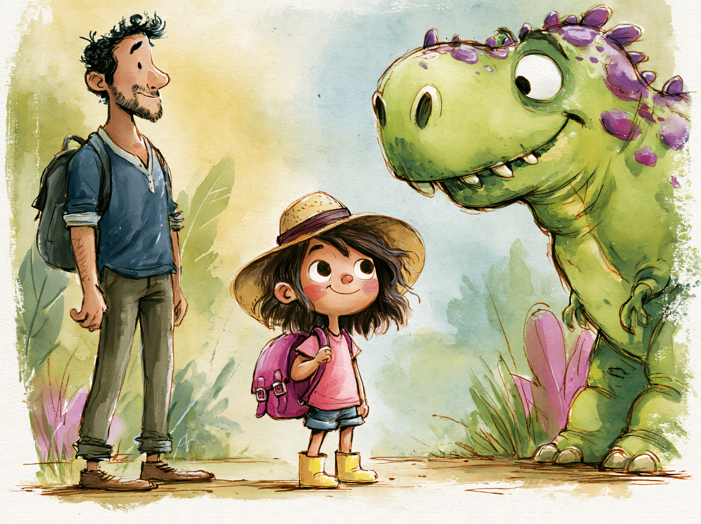
এরপর এল একটা দেয়াল। একটা বিশাল দেয়াল। প্রায় মেঘ ছুঁয়ে ফেলার মতো উঁচু!
“ওপর দিয়ে যাব?” বাবা জিজ্ঞেস করলেন।
“ঘুরে যাব!” রুশদা বলল। সে আবার মানচিত্রটা দেখল।
পথটা বাঁয়ে বেঁকে গেল, তারপর ডানে, তারপর আবার বাঁয়ে।
“S, S, S, S!” বলতে বলতে তারা এঁকেবেঁকে একটা গোপন পথ দিয়ে এগিয়ে গেল।
অবশেষে দেয়ালটা পেছনে পড়ে রইল। “আমাদের বেয়ে উঠতে হয়নি,” বাবা বললেন। “শুধু ভালো করে দেখতে হয়েছে!”
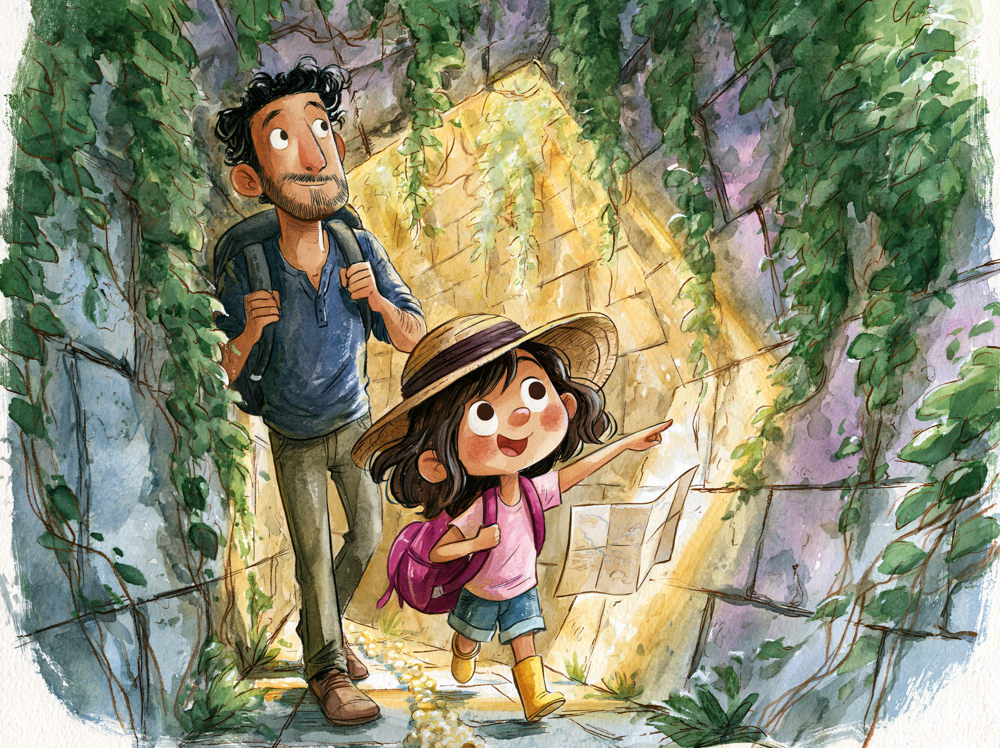
গুড়ুম-গুড়ুম!
পথের ওপর দিয়ে একটা জ্বলজ্বলে ফাটল চলে গেছে। অনেক নিচে টগবগ করে ফুটছে কমলা রঙের লাভা।
“তোমার পানির শক্তি কি কাজে লাগানো যায়?” বাবা জিজ্ঞেস করলেন।
রুশদা মাথা নাড়ল। “গুপ্তধন না পাওয়া পর্যন্ত না।”
সে মানচিত্রের দিকে তাকাল, তারপর পাহাড়গুলোর দিকে।
“বুঝেছি! আমরা নিরাপদ পথে ঘুরে যাব!”
আর তারা ঠিক তা-ই করল।
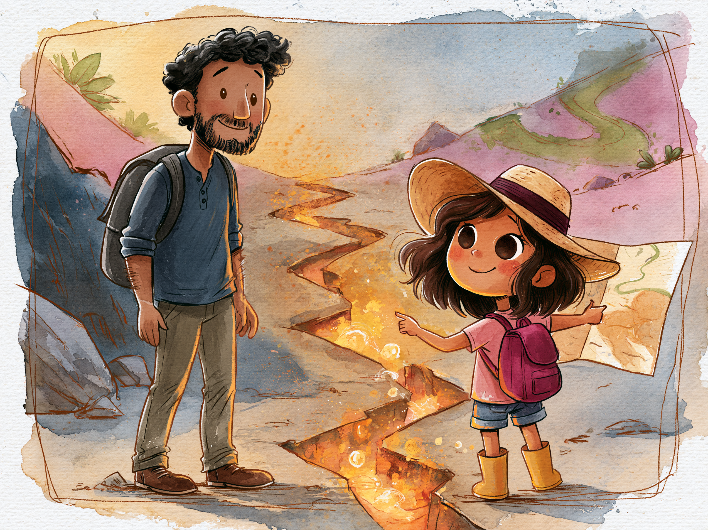
কিছুক্ষণ পর তারা পৌঁছাল ঝলমলে এক নদীর ধারে। তীরে একটা ছোট্ট কাঠের নৌকা অপেক্ষা করছিল।
“সমুদ্রযাত্রা!” নৌকায় উঠতে উঠতে বাবা বললেন।
“না, বাবা!” রুশদা হেসে ফেলল। “আমরা সমুদ্রযাত্রায় যাচ্ছি না।”
“আমরা যাচ্ছি পপকর্নের যাত্রায়!”
বাবা একটা বৈঠা তুলে নিলেন। “বৈঠা বাইব?”
রুশদা হেলান দিয়ে পপকর্নের মতো মেঘগুলো দেখতে লাগল। “উঁহু। আমরা শুধু ভেসে যাব।”
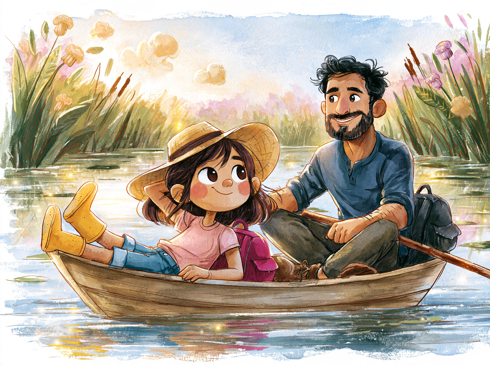
নদীর শেষে তিনটা পথ অপেক্ষা করছিল।
একটা গেছে অন্ধকার গুহার দিকে। একটা উঠে গেছে কাঁটাভরা পাহাড়ে। একটা ঢুকে গেছে ঝিকমিকে বনে।
“কোনটা?” বাবা জিজ্ঞেস করলেন।
রুশদা প্রায় চোখ বন্ধ করে বেছে নিতে যাচ্ছিল। তখনই সে কিছু একটা খেয়াল করল।
মাখনমাখা তিনটা দানা বনের দিকে মুখ করে আছে।
“পপকর্ন জানে!” সে বলল। “এই দিকে!”
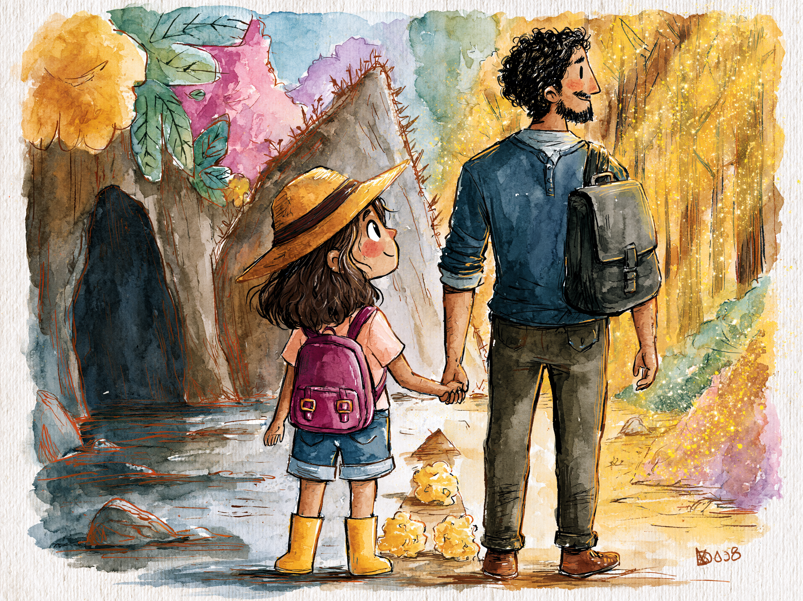
ঝিকমিকে বনের ওপারে দাঁড়িয়ে ছিল ছোট্ট পাহাড়টা।
আর তার চূড়ায় বসে ছিল একটা সোনালি গুপ্তধনের সিন্দুক।
“পেয়ে গেছি!” বাবা চেঁচিয়ে উঠলেন।
কিন্তু সিন্দুকটায় ছিল এক অদ্ভুত তালা। দেখতে ঠিক একটা বড় S অক্ষরের মতো।
রুশদা হাসল। “এটা আমি জানি।”
সে আঙুল দিয়ে আকারটা আঁকল: “S, S, S, S!”
খট! সোনালি ঢাকনাটা ঝট করে খুলে গেল।
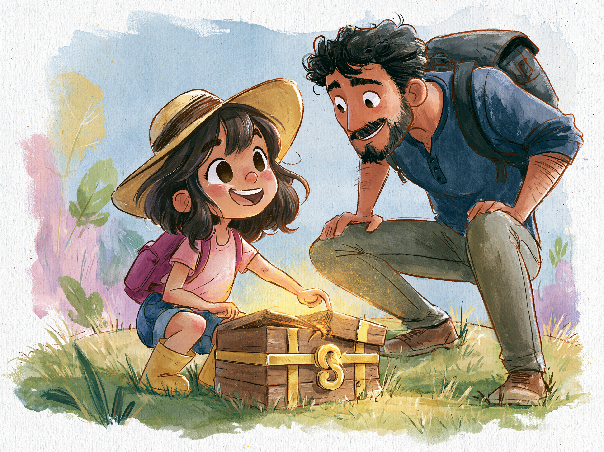
ভেতরে নাচছিল দুটো ছোট্ট আলো: একটা রুপালি, একটা নীল।
নীল আলোটা রুশদাকে ছুঁয়ে দিল। ছলাৎ! তার বুটের চারপাশে পানির একটা ফিতা ঘুরপাক খেতে লাগল।
রুপালি আলোটা বাবাকে ছুঁয়ে দিল। সাঁই! মৃদু হাওয়ায় তাঁর চুল উড়তে লাগল।
“তোমার শক্তি বাতাস,” রুশদা বলল, “আর আমার শক্তি পানি!”
দুজনে মিলে তারা বানাল ঝলমলে এক রংধনু।
“আমরা পেরেছি!” বাবা হেসে বললেন।
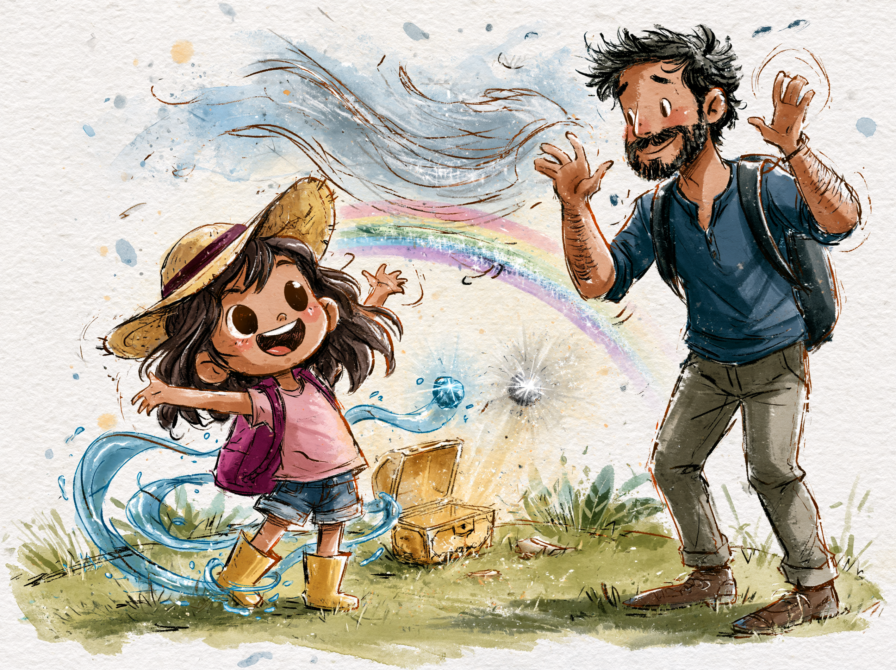
তারপর বাবা দূরের পাহাড়টার দিকে তাকালেন।
“এবার বাড়ি যাব কীভাবে?”
রুশদা তার মানচিত্রটা খুলল। পথের ধারে ধারে পপকর্নের সব ছোট্ট তীরচিহ্ন অপেক্ষা করছিল।
“মনে আছে? আমি তো ফেরার পথ বানিয়ে রেখেছি!”
তীরচিহ্ন ধরে তারা নদী পেরোল, দেয়াল ঘুরে এল, বন্ধু ডাইনোসরের পাশ দিয়ে গেল।
শেষ মোড়ে রুশদা একটা দরজা দেখতে পেল, যেটা দেখতে হুবহু তার ছবির মতো।
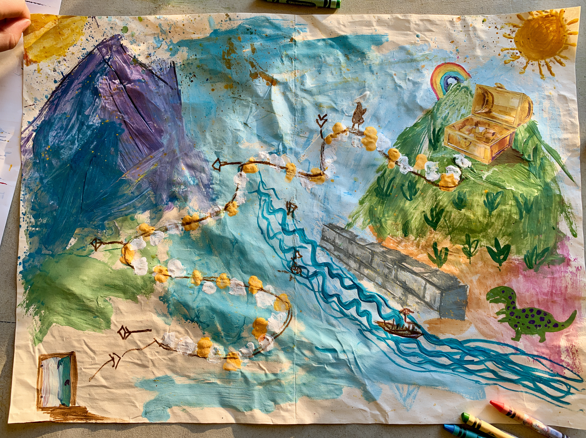
STARTTREASURESSSSফট!
রুশদা আর বাবা এসে নামল বসার ঘরের কার্পেটের ওপর।
সেখানে ছিল ছবিটা। পাহাড়গুলো। গুপ্তধন। আঁকাবাঁকা পপকর্নের পথ।
আর রুশদার ক্রেয়নের পাশে পড়ে ছিল একটা সত্যিকারের, মাখনমাখা পপকর্নের দানা।
“অভিযানটা কি সত্যি ছিল?” বাবা ফিসফিস করে বললেন।
রুশদা চোখ টিপল। “এটা গোপন কথা।”
তারপর সে একটা বেগুনি ক্রেয়ন তুলে নিল। “বাবা? আরেকটা চ্যালেঞ্জের জন্য তৈরি?”
বাবা হাসলেন। “সবসময়।”
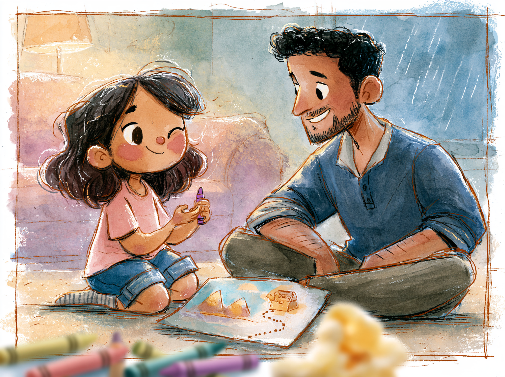